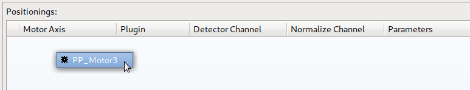
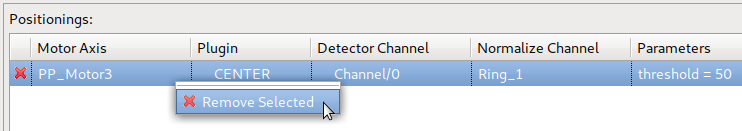
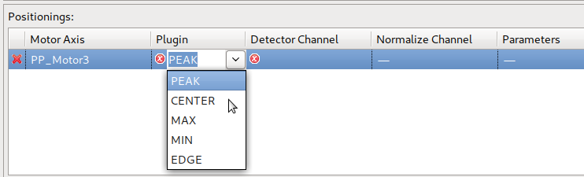
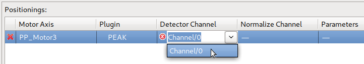
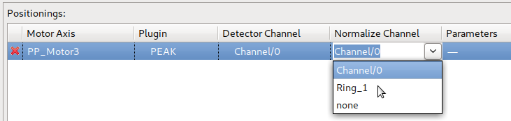
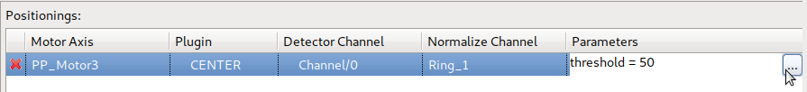
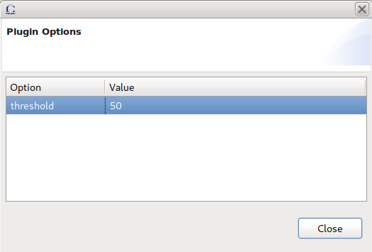

Several properties of a Positioning added to a scan module can be modified within the Positioning table of the SM Prescan / Postscan / Positioning / Plot View. Editing the different attributes is explained in detail below.
A Positioning can be added by right-clicking in the Positionings table and selecting one of the axes shown in the context menu:

Note that only axes present in the currently selected scan module are available for positionings. An existing Entry can be removed later by clicking the “x” in the first column or using the context menu (right-clicking the element to remove):

By clicking in the plugin column, the positioning plugin can be selected:

Some of the available plugins have additional parameters.
The detector channel the plugin calculation is based upon is selected in this column:

Note that only channels present in the currently selected scan module are for available for positionings.
An optional normalize channel can be selected by editing this column:

Note that only channels present in the currently selected scan module are for available as normalize channels for positionings.
As mentioned before, some of the plugins have parameters which are shown in this column. The parameters can be edited by clicking in the column:

After clicking on “...” a dialog opens where the parameters can be edited:
